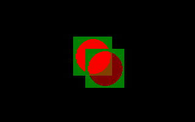

ImageCreate

Alloue et initialise une image (stockage en mémoire)
Declare Function ImageCreate Overload ( ByVal width As Integer, ByVal height As Integer, ByVal color As UInteger = transparent_color ) As Any Ptr
Declare Function ImageCreate ( ByVal width As Integer, ByVal height As Integer, ByVal color As UInteger = transparent_color, ByVal depth As Integer ) As Any Ptr
result = ImageCreate( width, height [, [ color ][, depth ]] )
width
Si l'image ne peut être créée NULL (0) est renvoyé. Sinon, c'est l'adresse de l'image qui est renvoyée.
Les deux procédures essaient d'allouer de la mémoire pour une image de dimensions: width (largeur) et height(hauteur). Si échec, un NULL (0) est renvoyé. Sinon, une image est créée et initialisée en la remplissant entièrement avec des pixels de valeur color. Si omis, color prend la valeur de la couleur transparente pour l'écran graphique courant, qui peut être déterminée en appelant ScreenControl. Dans tous les cas, l'adresse de l'image est retournée, qui est ensuite contrôlée par l'utilisateur, et peut être détruite en utilisant ImageDestroy..
La première procédure crée une image avec une profondeur de couleur correspondant à celle de l'écran graphique courant, qui peut être déterminée en appelant ScreenControl. La seconde procédure crée une image avec une profondeur de couleur depth, en bits par pixel. Pour chaque procédure, l'image obtenue peut être utilisée dans l'élaboration de procédures dans n'importe quel mode écran - et à travers les changements de mode - tant que la profondeur de couleur de l'image correspond à celle de l'écran graphique.
Les images inutiles seront détruites avec ImageDestroy, pour éviter des problèmes de mémoire.
ImageCreate est la méthode recommandée pour allouer de la mémoire pour de nouvelles images. La disposition de la mémoire - la taille, structure, etc - bien que documentée, peut changer d'une version à une autre, rendant le calcul manuel des tailles difficile et sujet à erreurs. Cependant, ImageInfo peut être utilisé pour déterminer, entre autres, la taille, en octets, d'une image existant, permettant ainsi d'allouer de la mémoire manuellement pour une copie d'image, ou pour une lecture ou une écriture à partir d'un fichier ou d'un "device".
Get (Graphique) peut être utilisé pour initialiser une image en utilisant la mémoire pré-allouée.
Syntaxe
Declare Function ImageCreate Overload ( ByVal width As Integer, ByVal height As Integer, ByVal color As UInteger = transparent_color ) As Any Ptr
Declare Function ImageCreate ( ByVal width As Integer, ByVal height As Integer, ByVal color As UInteger = transparent_color, ByVal depth As Integer ) As Any Ptr
Usage
result = ImageCreate( width, height [, [ color ][, depth ]] )
Paramètres
width
La largeur désirée, en nombre de pixels.
heightLa hauteur désirée, en nombre de pixels.
colorValeur du pixel pour remplir l'image.
depthLa profondeur de couleur, en bits par pixel.
Valeur renvoyée
Si l'image ne peut être créée NULL (0) est renvoyé. Sinon, c'est l'adresse de l'image qui est renvoyée.
Description
Les deux procédures essaient d'allouer de la mémoire pour une image de dimensions: width (largeur) et height(hauteur). Si échec, un NULL (0) est renvoyé. Sinon, une image est créée et initialisée en la remplissant entièrement avec des pixels de valeur color. Si omis, color prend la valeur de la couleur transparente pour l'écran graphique courant, qui peut être déterminée en appelant ScreenControl. Dans tous les cas, l'adresse de l'image est retournée, qui est ensuite contrôlée par l'utilisateur, et peut être détruite en utilisant ImageDestroy..
La première procédure crée une image avec une profondeur de couleur correspondant à celle de l'écran graphique courant, qui peut être déterminée en appelant ScreenControl. La seconde procédure crée une image avec une profondeur de couleur depth, en bits par pixel. Pour chaque procédure, l'image obtenue peut être utilisée dans l'élaboration de procédures dans n'importe quel mode écran - et à travers les changements de mode - tant que la profondeur de couleur de l'image correspond à celle de l'écran graphique.
Les images inutiles seront détruites avec ImageDestroy, pour éviter des problèmes de mémoire.
ImageCreate est la méthode recommandée pour allouer de la mémoire pour de nouvelles images. La disposition de la mémoire - la taille, structure, etc - bien que documentée, peut changer d'une version à une autre, rendant le calcul manuel des tailles difficile et sujet à erreurs. Cependant, ImageInfo peut être utilisé pour déterminer, entre autres, la taille, en octets, d'une image existant, permettant ainsi d'allouer de la mémoire manuellement pour une copie d'image, ou pour une lecture ou une écriture à partir d'un fichier ou d'un "device".
Get (Graphique) peut être utilisé pour initialiser une image en utilisant la mémoire pré-allouée.
Exemple
'' Cree un ecran graphique.
ScreenRes 320, 200, 32
'' Cree une image 64x64 pixels avec un arriere-plan vert fonce.
Dim image As Any Ptr = ImageCreate( 64, 64, RGB(0, 128, 0) )
If image = 0 Then
Print "Failed to create image."
Sleep
End -1
End If
'' Dessine un cercle rouge semi-transparent, au centre de l'image.
Circle image, (32, 32), 28, RGBA(255, 0, 0, 128),,, 1.0, f
'' Dessine l'image sur l'ecran en utilisant differentes methodes.
Put (120, 60), image, PSet
Put (140, 80), image, Alpha
'' Detruit l'image.
ImageDestroy image
Sleep
ScreenRes 320, 200, 32
'' Cree une image 64x64 pixels avec un arriere-plan vert fonce.
Dim image As Any Ptr = ImageCreate( 64, 64, RGB(0, 128, 0) )
If image = 0 Then
Print "Failed to create image."
Sleep
End -1
End If
'' Dessine un cercle rouge semi-transparent, au centre de l'image.
Circle image, (32, 32), 28, RGBA(255, 0, 0, 128),,, 1.0, f
'' Dessine l'image sur l'ecran en utilisant differentes methodes.
Put (120, 60), image, PSet
Put (140, 80), image, Alpha
'' Detruit l'image.
ImageDestroy image
Sleep

Différences de Dialecte
- Non disponible dans le dialecte -lang qb sauf référencé avec l'alias __Imagecreate.
Différences avec QB
- Nouveau pour FreeBASIC
Voir aussi